Professional & Enterprise Projects
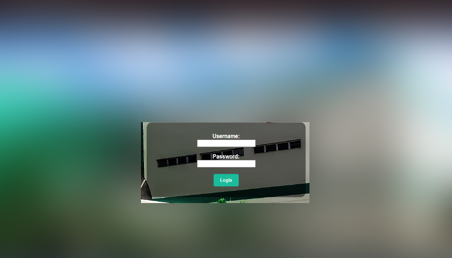
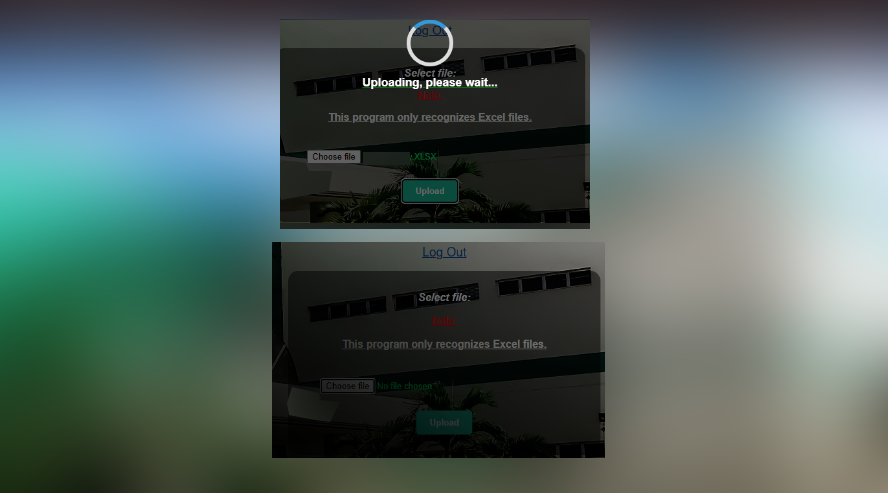
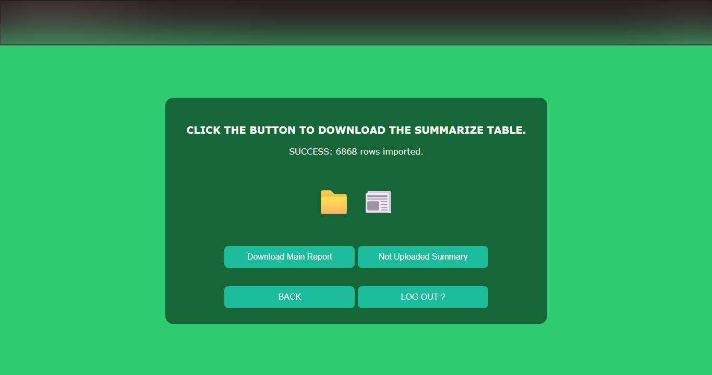
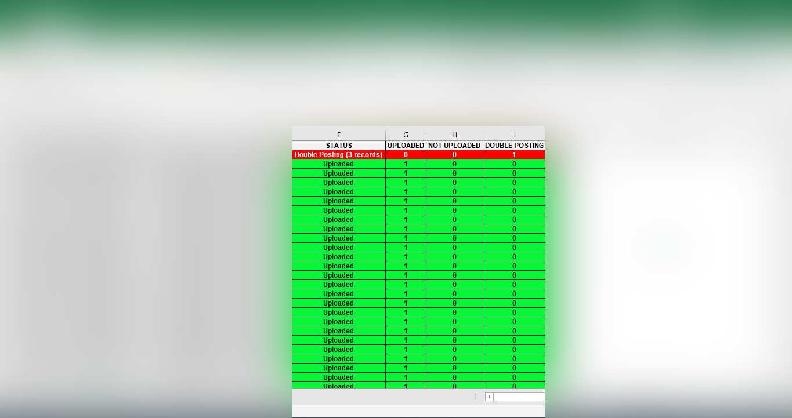
💼 Professional Web Project – SAP/WMS Data Consolidation Portal
🏢 Company: Nidec Philippines Corporation
🗺️ Location: 136 North Science Avenue Extension, Laguna Technopark SEZ, Binan, Laguna, Philippines
🗓️ Duration: October 21, 2025 – April 20, 2026
🛠️ Technologies: PHP, MySQL, PDO, Excel, SAP, WMS
📌 Project Overview
Developed a web portal to consolidate and validate SAP and WMS batch data. Uploaded Excel files from SAP are processed, compared with scanned inventory, and summarized for audit purposes.
- Automated Excel upload and processing pipeline storing records in the uploaded table with auto-truncate cleanup. Implemented warning prompts and automated backups to safeguard against data loss while maintaining real-time data integrity.
- Compared uploaded SAP data against scanned inventory to identify Not Uploaded, Uploaded, and Double Posted items automatically.
- Implemented business rules for double postings, quantity validation, and batch tracking per department.
- Enabled weekly validation, which was previously monthly, with both weekly and monthly audit summaries now automated and directly available in the web portal.
- Generated summary reports for weekly and monthly audits, with Excel export capability.
- Integrated RPA workflows to download from WMS, upload to SAP, control errors, and auto-resume processes via Remote Desktop & VNCViewer.
- Reduced manual effort, decreased errors, and improved reliability of ordering and costing processes across departments.
Impact: Enabled real-time data validation, automated SAP uploads, and improved operational efficiency for inventory and audit processes.
🌐Live Portal: Internal (company access only)
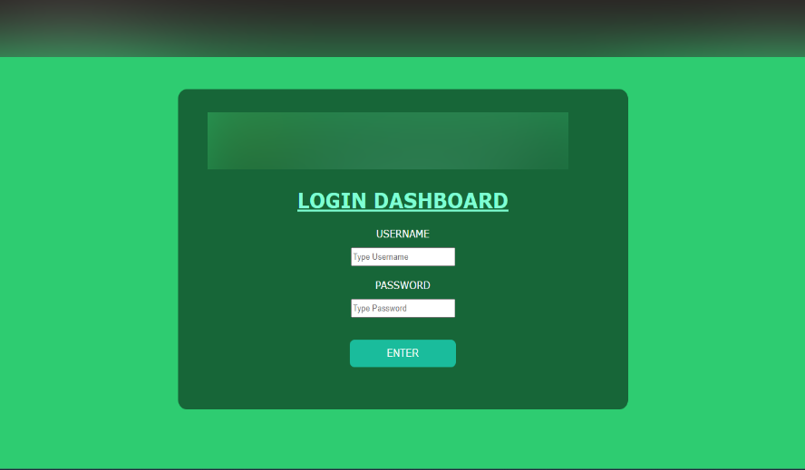
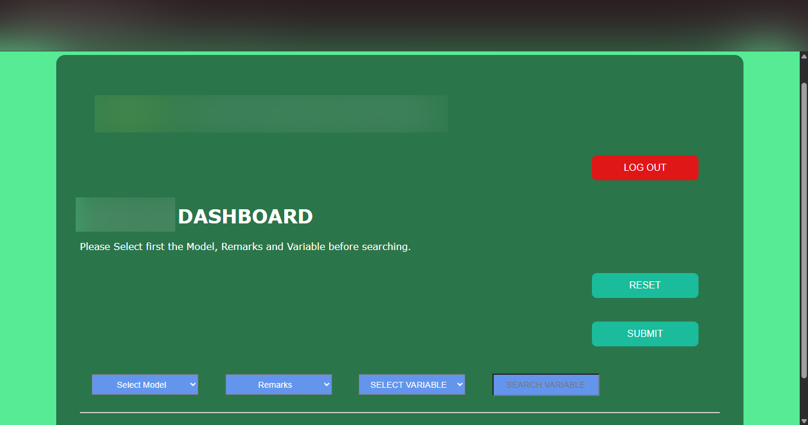
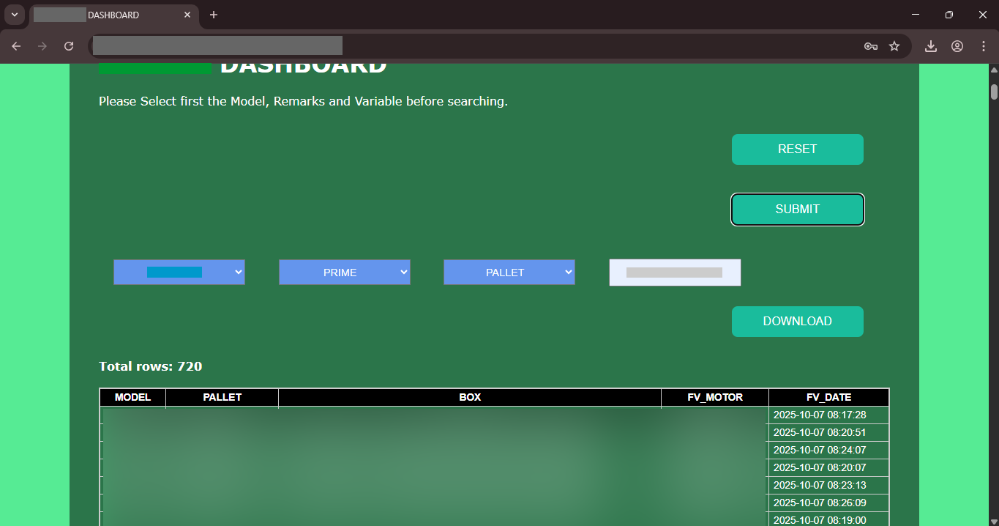
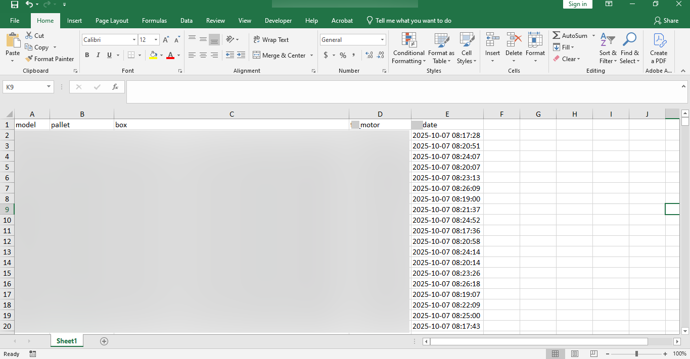
💼 Professional Web Project – Dynamic Model Data Search & Excel Processing System
🏢 Company: Nidec Philippines Corporation
🗺️ Location: 136 North Science Avenue Extension, Laguna Technopark SEZ, Binan, Laguna, Philippines
🗓️ Duration: October 21, 2025 – April 20, 2026
🛠️ Tools & Technologies: PHP, MySQL, HTML, CSS, JavaScript
📌 Project Overview
Developed an internal web-based system designed to streamline the process of locating and validating product model data from large Excel datasets. The tool automates data ingestion and organizes records into a structured database for fast and reliable retrieval.
- Implemented automated Excel file processing to import and structure large datasets into a MySQL database.
- Developed a dynamic search interface allowing users to quickly locate specific model records without manually scanning spreadsheets.
- Designed optimized database queries to support fast lookups even when processing large volumes of records.
- Implemented filtering and structured data presentation to improve usability and reduce manual data checking.
- Improved operational efficiency by reducing time spent searching through large Excel files.
Impact: Significantly reduced manual searching and improved productivity by providing a centralized and searchable data system for large Excel-based datasets.
🌐Live Portal: Internal (company access only)
Professional Experience Project – 🤖 Robotic Process Automation – Download And Upload Process
Images are not available for this project due to the confidential nature of the RPA software used.
🏢 Company: Nidec Philippines Corporation
🗺️ Location: 136 North Science Avenue Extension, Laguna Technopark SEZ, Binan, Laguna, Philippines
🗓️ Duration: October 21, 2025 – April 20, 2026
🛠️ Tools & Technologies: (Confidential) RPA software, Excel, SQL, SAP, Warehouse Management Systems; C# & Visual Studio (for testing in the test environment); Remote Desktop & VNCViewer (for live environment management)
📌 Project Overview
Implemented an automated workflow for end-to-end SAP and WMS data handling. Key responsibilities included:
- Downloading batch data from the Warehouse Management System (WMS) for processing.
- Uploading processed data into SAP, ensuring accurate transfers and preventing double postings caused by temporary network spikes.
- Logging success/error messages for each batch, storing backups, and maintaining comparison records for future uploads.
- Automating workflow control: disabling the process via .bat script on errors, testing fixes in the test environment with C# & Visual Studio, and resuming in the live environment using Remote Desktop & VNCViewer. Implemented an auto-start feature to restart the workflow automatically once the User Interface is stable.
- Leveraging image detection in RPA Software to accurately perform mouse clicks and keyboard events on the SAP and WMS interfaces, ensuring reliable interaction with the user interface even under dynamic screen conditions.
Operational Details: Runs continuously 24/7 in 15-minute cycles with a 4-minute pause between batches to maintain data integrity across both databases.
Impact: Reduced monthly errors from over 1,000 to ~70 per audit, ensured reliable data transfer between WMS and SAP, minimized manual intervention, and improved audit accuracy. Fully eliminated manual handling, allowing the team to focus on higher-value tasks and boosting operational efficiency.
Professional Experience Project – 🤖 Robotic Process Automation – Yield Loss Data Download & Auto-Summarization
Images are not available for this project due to the confidential nature of the RPA software used.
🏢 Company: Nidec Philippines Corporation
🗺️ Location: 136 North Science Avenue Extension, Laguna Technopark SEZ, Binan, Laguna, Philippines
🗓️ Duration: October 21, 2025 – April 20, 2026
🛠️ Tools & Technologies: (Confidential) RPA Software, Excel VBA (Macro Automation), Excel Data Processing, Image Recognition Automation for Mouse & Keyboard Interaction
📌 Project Overview
Developed an automated RPA workflow designed to download, process, and summarize Yield Loss data used for operational analysis. The system handles multiple model classifications and part-based datasets, ensuring accurate and consistent daily reporting while eliminating manual data preparation.
- Implemented an RPA process responsible for automatically downloading 114 different yield loss datasets across multiple model classifications and parts.
- Utilized image recognition automation to accurately control mouse movements and keyboard inputs within the system interface, ensuring reliable navigation and file downloads.
- Designed and developed a custom Excel VBA macro that automatically reads all downloaded files from a designated folder using the company’s predefined naming structure.
- The macro extracts the required data from the previous day’s Yield Loss reports and compiles them into a centralized summarized Excel report.
- Implemented an automated Save Copy As workflow to generate multiple backup copies for redundancy and data traceability.
-
Automated file organization by transferring:
- Raw downloaded files to an internal local storage folder for internal reference.
- Summarized reports to designated backup locations for the IT Department.
- Final processed files to a shared location accessible by the client for operational use.
Operational Details: The automation runs daily, retrieving the previous day's Yield Loss data and executing a fully automated pipeline consisting of file downloading, macro-based summarization, backup creation, and structured file distribution.
Impact: Eliminated manual downloading and data consolidation tasks across 114 datasets, significantly improving processing speed, data accuracy, and reporting consistency while providing reliable daily summarized data for both internal teams and external clients.
Internship Web Development Project
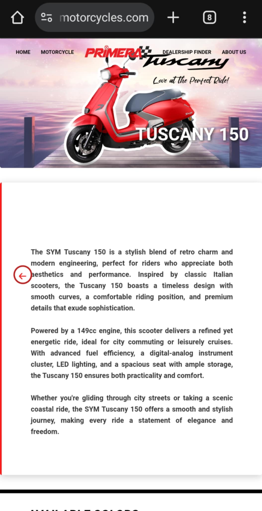
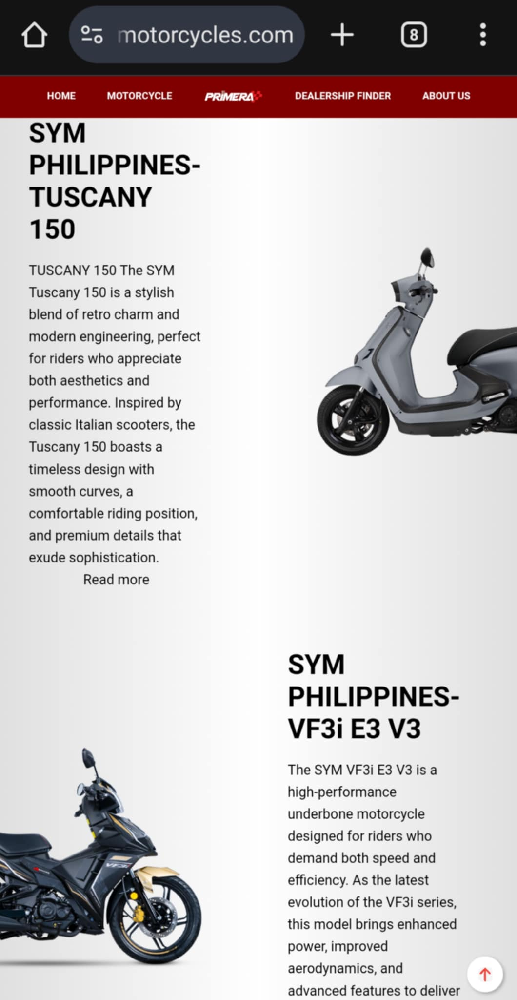
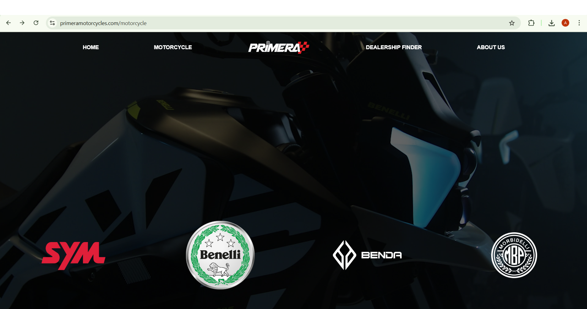
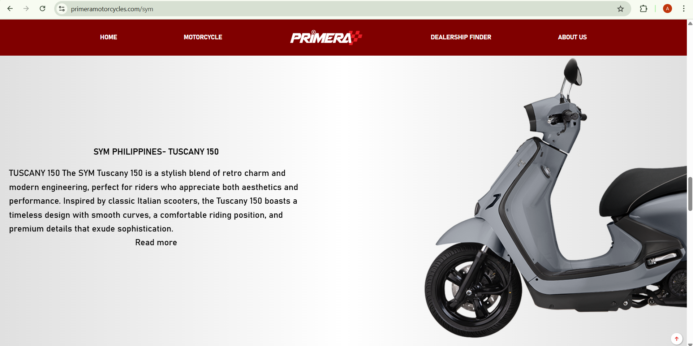
💼 Internship Project – Mitsukoshi Motors Philippines Inc.
🗺️ Location: Carmona, Cavite
🗓️ Duration: February 2, 2025 – June 6, 2025
🧑💻 Role: Web Developer Intern
🛠️ Technologies: PHP, HTML, CSS, Bootstrap, JavaScript, CodeIgniter 4, MySQL
📌 Project Overview
During my internship, I was primarily responsible for developing the complete custom CMS for the Primera Motorcycles website under Mitsukoshi Motors Philippines Inc. The CMS was built using PHP (CodeIgniter 4) and MySQL, enabling the admin to manage motorcycle entries, specifications, media uploads, and brand data.
I also handled both backend and frontend development for all SYM motorcycle pages and the Motorcycle Page, implementing dynamic routing, controller-based page rendering, and responsive design using HTML, CSS, Bootstrap, and JavaScript. The rest of the site’s frontend sections were developed by my teammates.
The project supports multiple motorcycle brands (SYM, Benda, etc.) and was structured for easy scalability and content management.
🔗 Live Website: primeramotorcycles.com
🔗 My Motorcycle Pages:
Academic Projects
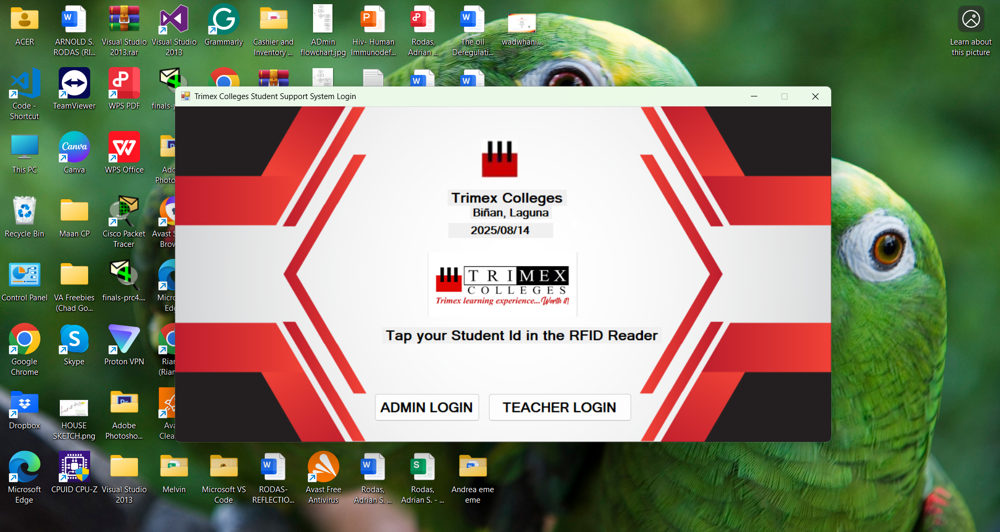
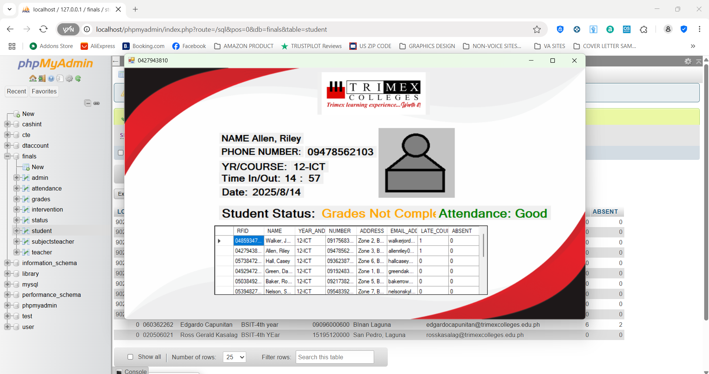
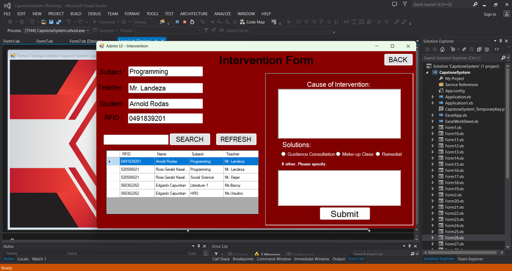
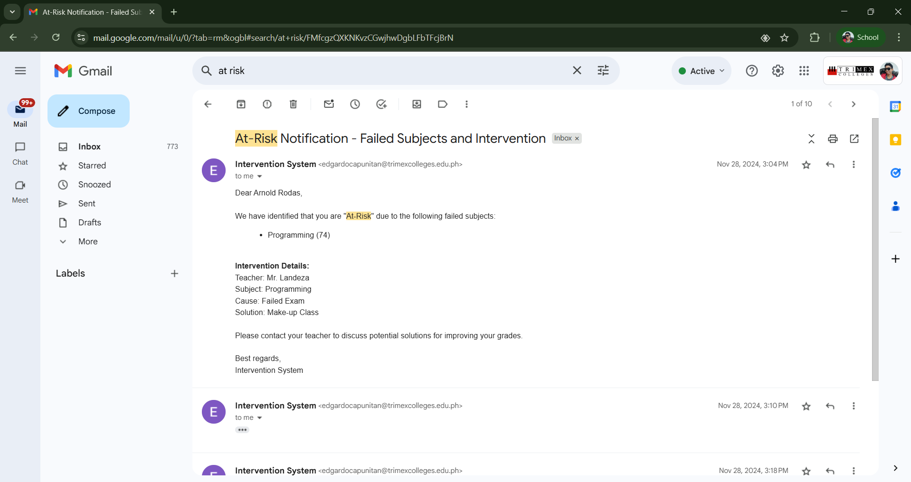
🎓 Thesis Project – Student Intervention Monitoring System
🏫 School: Trimex Colleges
👨💻 Role: Co-Developer (Backend & Frontend)
🛠️ Technologies: Visual Basic, MySQL, PHPMailer, RFID System
📌 Project Overview
Developed in collaboration with a teammate, this system automates student monitoring using an RFID-based attendance and grading system. Students who are absent for three consecutive days or have an average below 75 in major subjects are flagged as "At Risk," labeled as "Subject for Improvement" in our research documentation.
We built the system entirely using VB.NET for both the frontend and backend, with MySQL as the database. Email alerts are automatically sent via PHPMailer when specific risk conditions are met. The system also tracks student intervention statuses such as "At Risk," "Subject for Improvement," "Failed," or "Intervention Completed."
Key features include teacher-subject management, grade input, student performance tracking, searchable records, and full CRUD functionality.
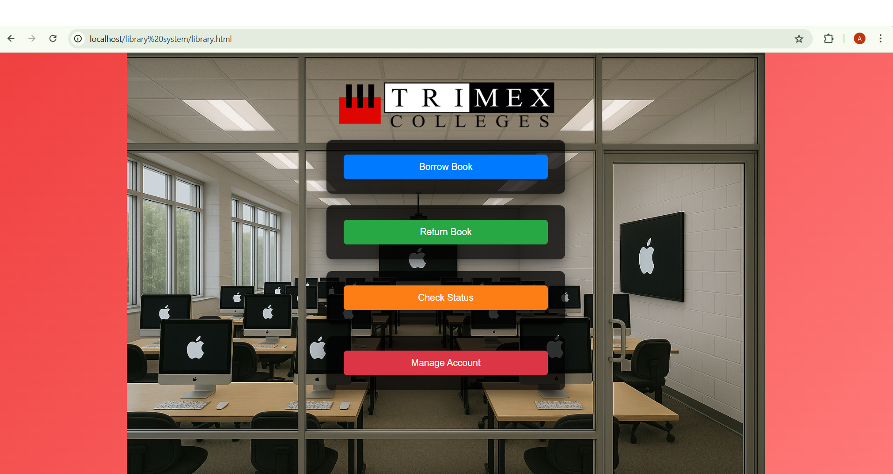
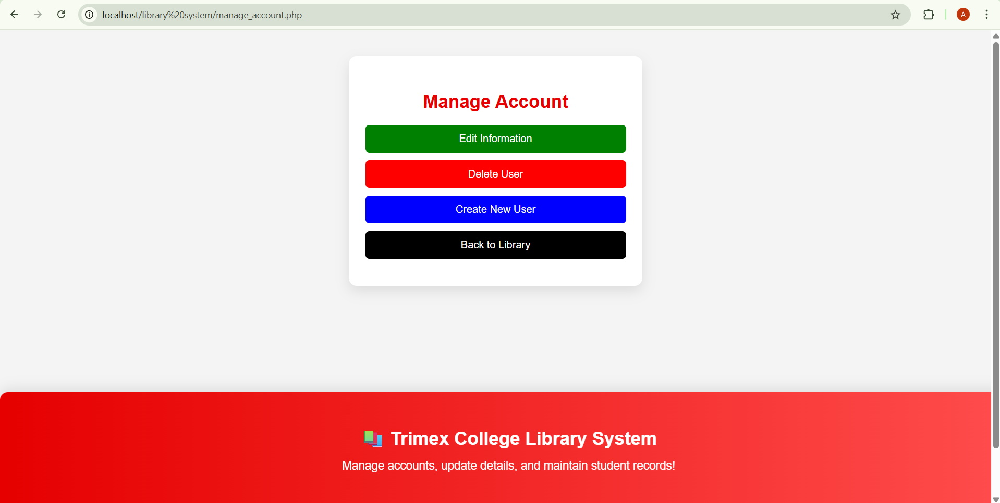
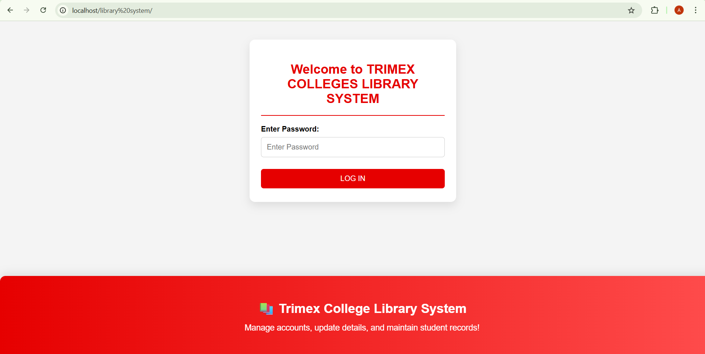
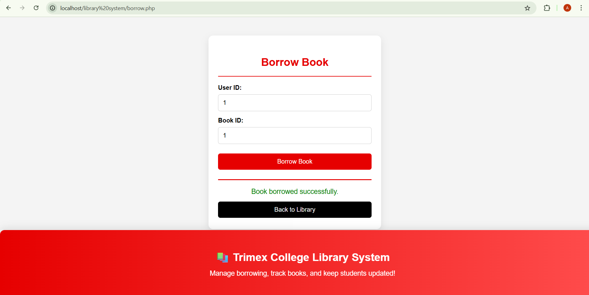
📚 1-Week Activity Project – Library Management System
🏫 School: Trimex Colleges
🗓️ Duration: 1 Week (School Activity)
👨💻 Role: Solo Developer
🛠️ Technologies: PHP, HTML, MySQL
📌 Project Overview
A basic Library Management System developed as a one-week activity. The system tracks borrowing history, including borrow date and return date, and updates the book status as either “Available” or “Borrowed.”
The librarian can perform full CRUD operations for student records, all of which are stored in a MySQL database. The login for the librarian is hardcoded in PHP and does not rely on the database.
Though simple, the project demonstrates basic relational data handling and logic for real-world scenarios.
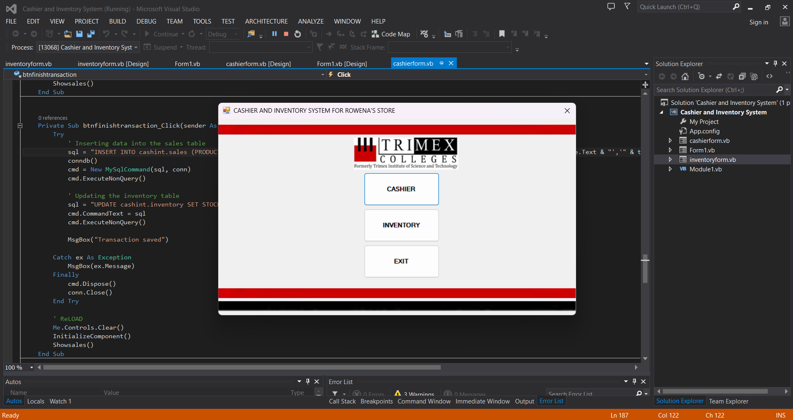
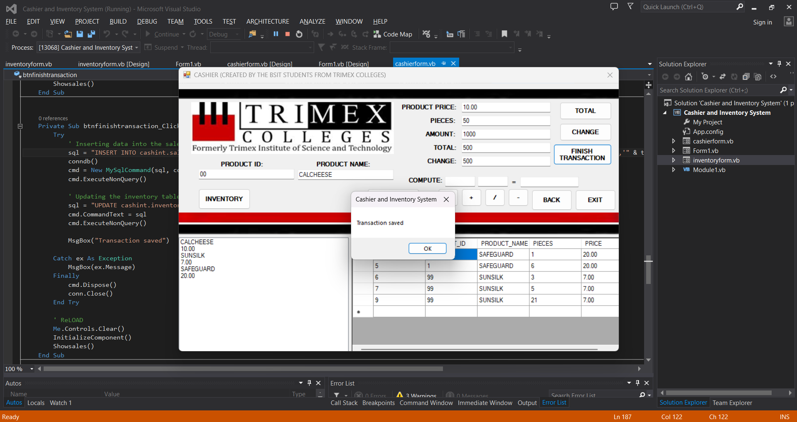
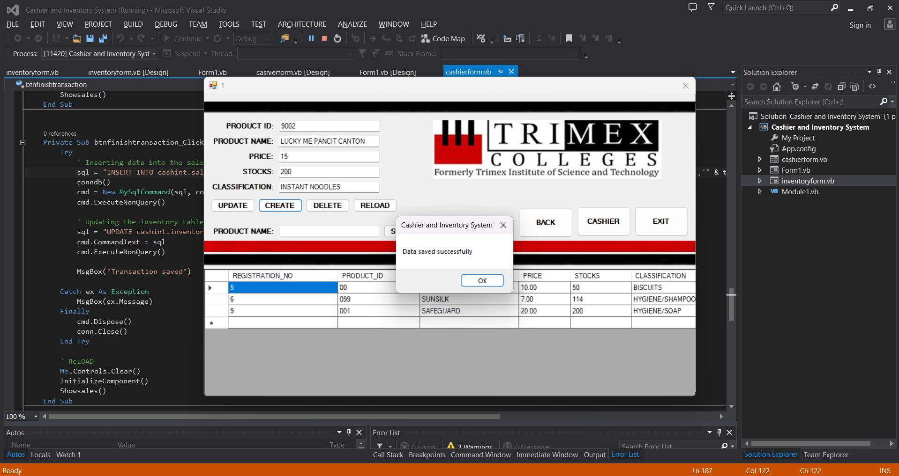
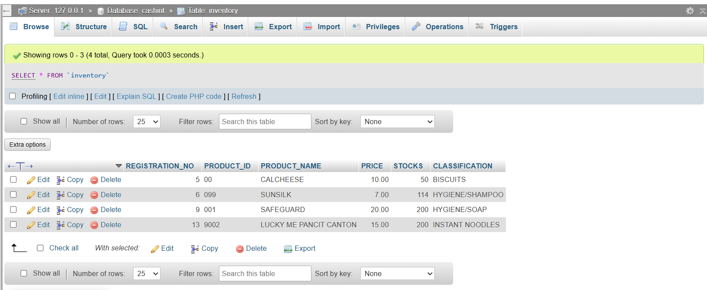
🧾 Cashier and Inventory System – CRUD & Barcode Project
🏫 School: Trimex Colleges
🗓️ Duration: 2nd Year College (School Presentation)
👨💻 Role: Solo Developer
🛠️ Technologies: Visual Basic, MySQL
📌 Project Overview
A simple yet functional cashier and inventory system built as a CRUD-focused presentation project. Designed to replicate real-world sales systems like those in Super8 or mini-marts.
Features include barcode scanning, automatic sales computation, and product deduction from inventory after each successful transaction.
The system allows full CRUD functionality for product inventory and sales records. Items marked as sold are automatically reflected in the sales database, and inventory counts are updated accordingly.
Though built primarily for demonstrating CRUD logic, the system provides a clear simulation of real-world cashier workflows.
Personal / Experimental Projects
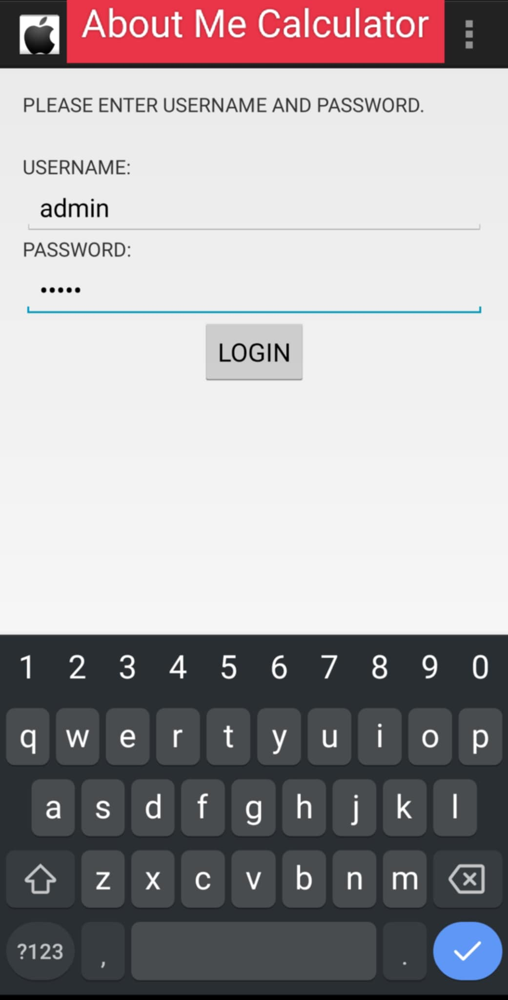
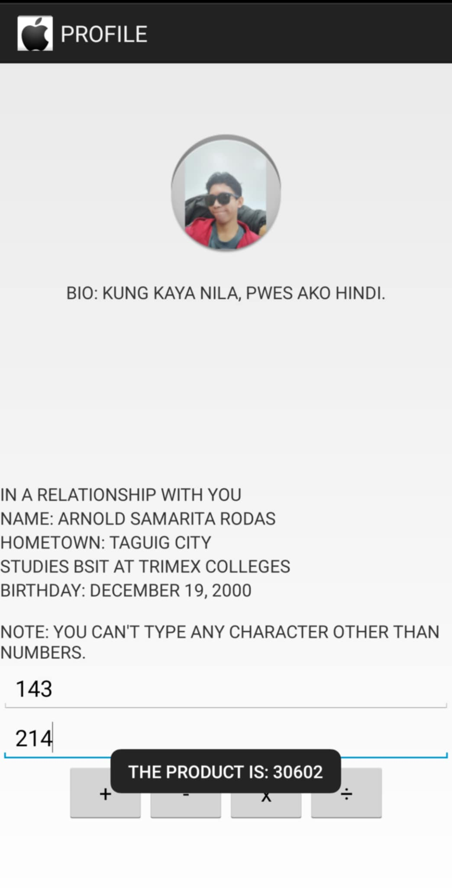
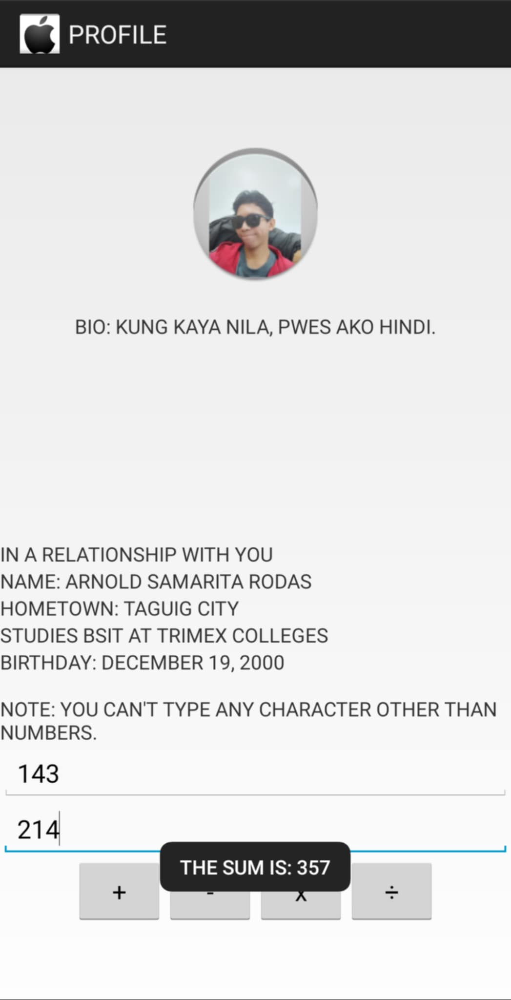
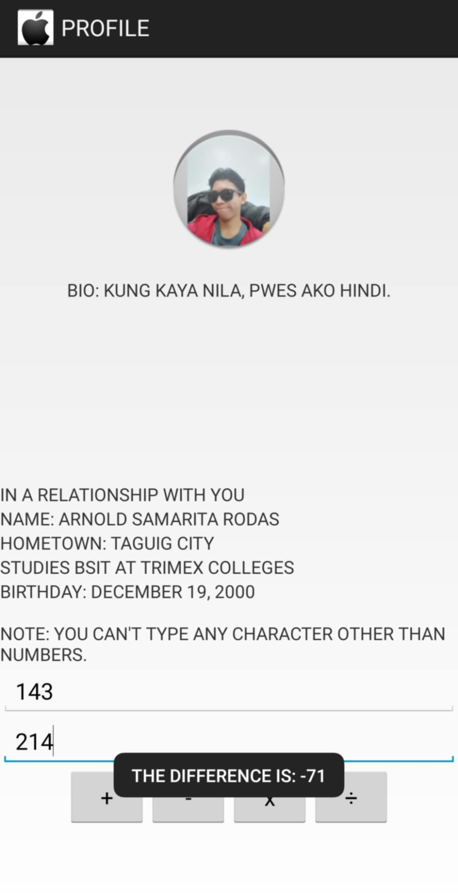
📱 Personal Android App – "About Me" & Calculator
🗓️ Year: 2nd Year College
⚙️ Platform: Android (APK built in Eclipse)
🛠️ Technologies: Java, Eclipse IDE
📌 Project Overview
This was a fun Android app I made back in second year college, just for fun. I used Java with Eclipse to build it. It had a login screen with hardcoded credentials, a simple calculator that can add, subtract, multiply, and divide, and a profile page with my name, picture, birthday, hometown, and relationship status.
The calculator only accepted numbers. If you tried typing letters or symbols, it wouldn’t let you. After solving, it showed a popup saying something like “The sum is…”, “The difference is…”, “The product is…”, or “The quotient is…”
I kept it light and funny. My bio literally said: "KUNG KAYA NILA, PWES AKO HINDI." and under relationship status, it said: "IN A RELATIONSHIP WITH YOU."
I lost the source code already, but the APK is still on my phone. I still open it sometimes just to remember how I started with coding.
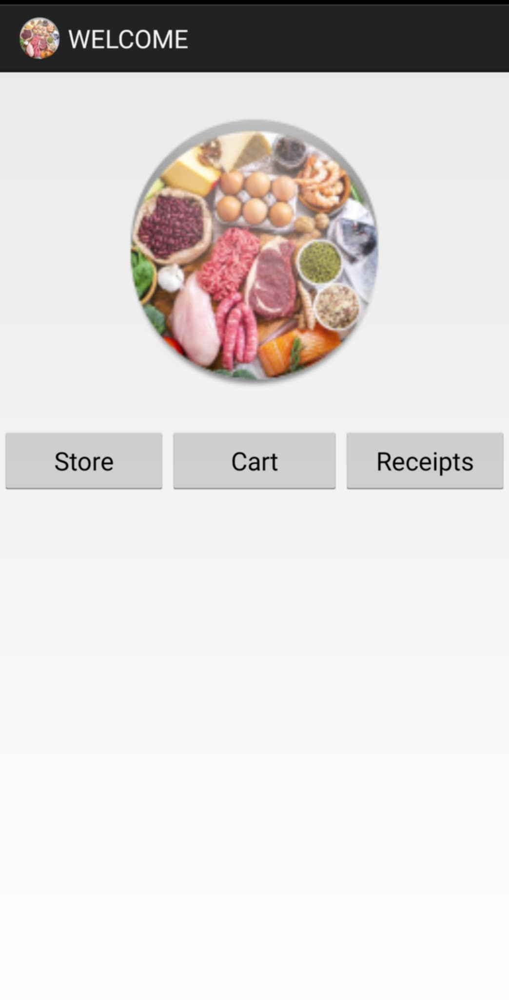
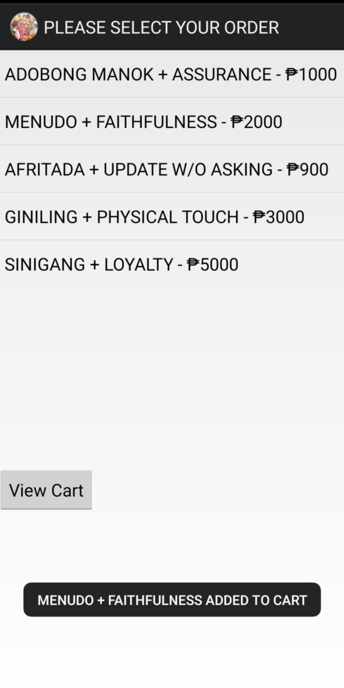
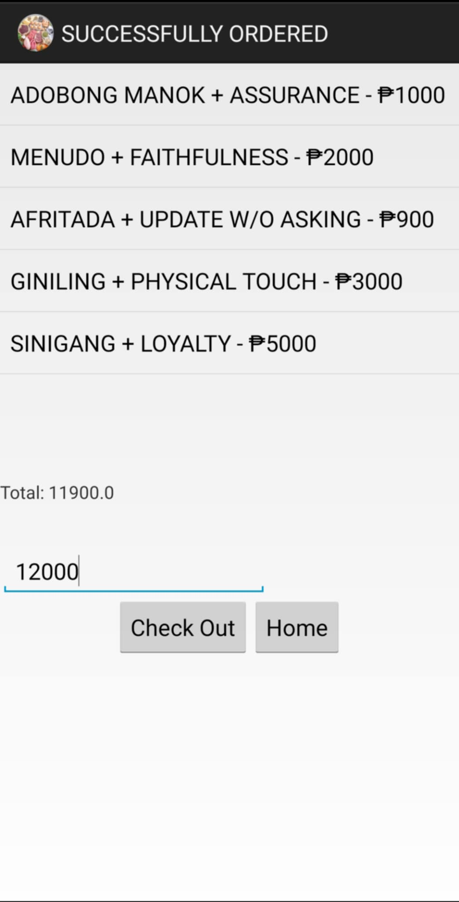
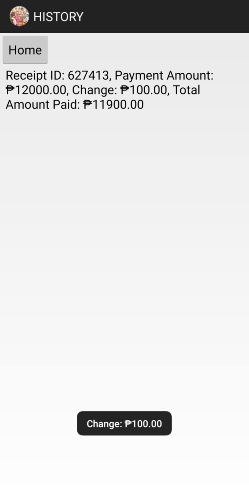
📱 Personal Android App – Carinderia Ordering System
🗓️ Year: 2nd Year College
⚙️ Platform: Android (APK built in Eclipse)
🛠️ Technologies: Java, Eclipse IDE
📌 Project Overview
This was a comedic Android ordering app I built during our midterm exam back in second year college. It had a hardcoded login and a carinderia-style menu with a fun twist. Every dish came with an emotional add-on like:
- Adobong Manok plus Assurance – 1000
- Menudo plus Faithfulness – 2000
- Afritada plus Update without asking – 900
- Giniling plus Physical touch – 3000
- Sinigang plus Loyalty – 5000
The app had a working view cart feature where selected orders and total price were displayed. It also had a payment calculator showing the change. Once payment was done, it redirected to the order history which displayed receipt ID, payment amount, total price, and change. The receipt ID was hardcoded. I can’t remember if I used a MySQL database or if it was fully local.
Sadly, the source code is lost, but the APK still lives on my phone as one of my favorite joke projects that surprisingly worked.
Technical Skills
- Programming: C, C++, C#, Python, JavaScript, PHP, Java, Visual Basic
- Frontend: HTML, CSS, Bootstrap, React
- Backend: PHP, CodeIgniter
- Database: MySQL, phpMyAdmin
- Tools: Git, GitHub, VS Code, XAMPP
- Automation: Power Automate, UiPath, Excel VBA
AI Tools
- Copilot, ChatGPT, Gemini
Contact
Email: arnoldrodas1232@gmail.com
GitHub Link: Click this for more info: github.com/arnoldrodas1232